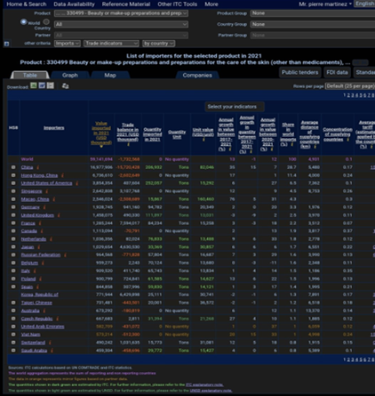
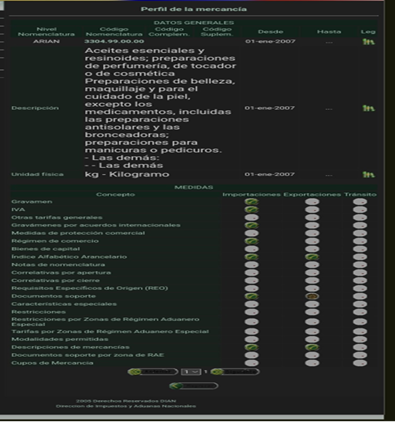
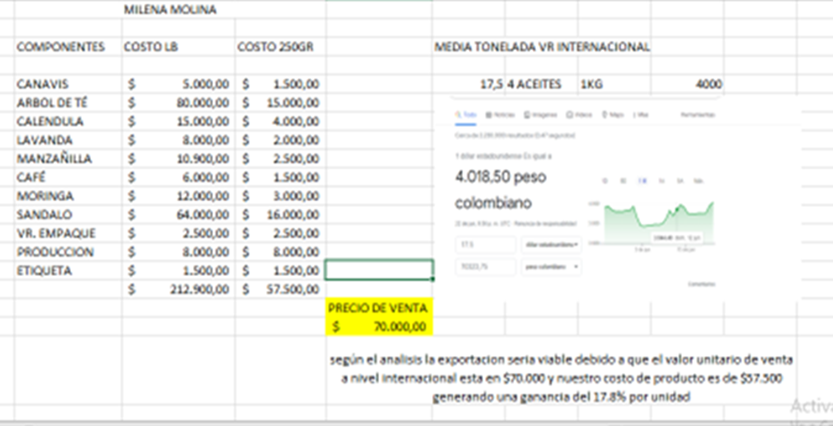

DUQUE QUINTERO TOMAS, GAVIRIA ACEVEDO MAURICIO, LOPEZ CASTANO SINDY MARCELA, OCAMPO BEDOYA JOHNNY ALEJANDRO, ROJAS ATEHORTUA YENIFER MELISA
DocenteEscuela de Administración Institución Universitaria Ceipa Sabaneta 2022
Comencemos!Es esencial al inicio del núcleo la importancia de conformar un equipo de trabajo el cual esté alineado con los retos y tareas asignadas por la institución y el docente, es por esto que este grupo se conforma gracias a la investigación de los perfiles de cada uno de los estudiantes y ver entre ellos un grado de compatibilidad para realizar las actividades propuestas; alinearse en la metodología de trabajo y crear unas normas de convivencia, disciplina y de trabajo en equipo, siendo muy claro en ellas y en las consecuencias del no cumplimiento de estas.
La propuesta innovadora a internacionalizar es Lekure, un aceite esencial de la empresa Milena Molina. Es importante estudiar el producto y la empresa por esto realizamos un análisis DOFA, en el cual encontramos directrices claras para el proyecto en curso. Es de vital importancia que la propuesta sea congruente con las sostenibilidades, las cuales son social, económico y ambiental. Además, el objetivo y la viabilidad de internacionalización es clave a la hora del desarrollo del producto a nivel de exportación para atraer nuevos mercados y clientes.
Se procede a estudiar dos posibles países para la exportación del producto Lekure, los países son Estados Unidos y Reino Unido. El estudio se hace a partir de unas variables económicas las cuales son: PIB per cápita, inflación, desempleo, IPC y salario mínimo. Se presentan gráficos y análisis donde se muestra el comportamiento de las variables en el país en 3 años distintos, estudiando así en la variable el grado de favorabilidad y el nivel de influencia.
studio del entorno económico es de suma importancia el estudio de diferentes entornos para la internacionalización del producto. Los entornos a estudiar son: Entorno Cultural, Entorno Político Legal, Entorno Tecnológico y Geo Ambiental, Entorno de Comercio Internacional y Entorno de Inversión Extranjera Directa. Dentro de cada uno de estos entornos se hace el análisis de tres indicadores que nos permitirán visualizar con mayor claridad la situación del país, para una posible exportación.
Para finalizar, al analizar las diferentes variables de los diferentes entornos se elegio a Estados Unidos como el país con el cual se va a empezar la exportación del aceite Lekure. A partir de esto se definió el plan de mercadeo con el cual se va a incursionar en el nuevo mercado, directamente de Miami, en el que se específica de nuestro público objetivo, desarrollo del producto, plaza, precio y promoción.
Sumérgete en este mundo de la internacionalización, y conoce el proyecto de exportación de la empresa Milena Molina, con su producto Lekure - Aceite esencial
| Nombre de la propuesta innovadora/empresa/reto | El nombre de la empresa es Milena Molina y el nombre de la propuesta innovadora es Lekure. |
|---|---|
| Descripción de producto y/o servicio | Lekure es un aceite esencial que está compuesto de materias primas las cuales son arbol de te, canabis, cafe, moringa, manzanilla, calendula y lavanda. Este aceite se comercializa en un frasco de madera biodegradable de 200mL. El producto está dirigido a hombres y mujeres de 18 años a 60 años. Este es un aceite cosmetológico, beneficia al cuerpo, trata e hidrata la piel por su alta concentración de vitaminas. Sirve para realizar masajes los cuales alivian molestias a nivel musculoesquelético. |
| Justificación de su elección | Elegimos a Milena Molina y a Lekure luego de un estudio que se hizo de varias empresas en las cuales estaban The Musas, Ram Technology, Firenzi y Milena Molina. En este estudio encontramos que Lekure tiene un gran potencial de innovación, además la empresa no ha incursionado en la exportación de producto, es una empresa con la cual ya llevamos varios núcleos trabajando. Milena Molina se cataloga como una empresa pyme, otra de las razones de que eligiéramos esta empresa. (Milena Molina) |
| Fortalezas |
|
| Debilidades |
|
| Oportunidades |
|
| Amenazas |
|
| Relación con dimensión económica | Generar riqueza económica en un marco local, regional y global que estimule el desarrollo financieramente posible y rentable, manteniendo la base de los recursos naturales y su conservación. Implica el uso de prácticas económicamente rentables que sean tanto social, como ambientalmente responsable. |
| Relación con dimensión ambiental |
|
| Relación con dimensión social | Su principal objetivo es garantizar que las actividades humanas se puedan desarrollar de tal modo que no destruyan las comunidades humanas a las que afecta, lo que garantiza la perdurabilidad de las mismas y de sus estilos de vida a largo plazo. |
| Viabilidad de internacionalización |
Después de ubicar en el portal muisca el producto a exportar y verificar su código de referenciación 3304.99.00.00 ¨Aceites esenciales y resinoides; preparaciones de perfumería, de tocador o de cosmética preparaciones de belleza, maquillaje y para el cuidado de la piel, excepto los medicamentos, incluidas las preparaciones antisolares y las bronceadoras; preparaciones para manicuras o pedicuros¨ (DIAN, Minhacienda, 2005). Nuestro siguiente paso fue analizar en Trade map, el comportamiento del producto a nivel mundial y la media del valor de venta encontrada es de $70.323 unidad y que nuestro costo de producción es de $57.500 estando por debajo del precio estándar en un 17.8% concluimos que es viable la oportunidad de iniciar la exportación de nuestro producto. ¨Trade Map proporciona, en forma de tablas, gráficos y mapas, indicadores sobre el desempeño de las exportaciones, la demanda internacional, mercados alternativos y mercados competitivos, así como un directorio de empresas importadoras y exportadoras¨ (map, s.f.) Ver archivo adjunto.   Nuestro siguiente paso fue analizar en Trade map, el comportamiento del producto a nivel mundial y la media del valor de venta encontrada es de $70.323 unidad y que nuestro costo de producción es de $57.500 estando por debajo del precio estándar en un 17.8% concluimos que es viable la oportunidad de iniciar la exportación de nuestro producto. ¨Trade Map proporciona, en forma de tablas, gráficos y mapas, indicadores sobre el desempeño de las exportaciones, la demanda internacional, mercados alternativos y mercados competitivos, así como un directorio de empresas importadoras y exportadoras¨ (map, s.f.)  |
| Objetivo de internacionalización |
|


| AÑO | IPC% |
|---|---|
| 2017 | 2,1 |
| 2018 | 2,4 |
| 2019 | 1,8 |
| AÑO | IPC% |
|---|---|
| 2017 | 2,6 |
| 2018 | 2,4 |
| 2019 | 1,7 |
La variable índice de Precio al Consumidor IPC tiene una alta influencia (5) en la idea de exportar a Estados Unidos el producto cosmético Lekure debido a que “si es demasiado alto, las personas promedio no van a poder comprar”(Buitrago, 2020) los productos. El grado de favorabilidad en los años analizados es de 3 y se mantiene estable en esos años, se decide mirar este periodo ya que los últimos años se vieron afectados por el Covid 19 y no es un comportamiento típico, porque ha llegado a hoy a un IPC del 8,6%, el cual no sería favorable para la exportación; se espera una estabilización de las variables económicas debido a que esta situación se presenta por causas de la post pandemia y para nuestro producto esperamos un mejor comportamiento en el mercado ya que después del impacto ocasionado por esta, las personas tienen un mayor grado de compromiso con el ambiente y se incrementa el uso de productos de origen natural.
La variable índice de Precio al Consumidor IPC tiene una alta influencia (5) en la idea de exportar a Reino Unido el producto cosmético Lekure y es muy similar el efecto que tiene en la economía a lo ya descrito para Estados Unidos. A pesar de que en los años analizados el indicador venía disminuyendo, el IPC a hoy en Reino Unido está llegando a 9,1 %, lo que claramente afecta la demanda del producto en ese país. Consideramos que la favorabilidad es de 4, porque la tendencia en años anteriores era a la baja, por lo que se se espera, igual que en Estados Unidos una estabilización de las variables económicas debido a que esta situación se presenta por causas de la post pandemia y para nuestro producto esperamos un mejor comportamiento en el mercado ya que después del impacto ocasionado por esta, las personas tienen un mayor grado de compromiso con el ambiente y se incrementa el uso de productos de origen natural.
| AÑO | Inflacion Estados Unidos |
|---|---|
| 2019 | 2,19% |
| 2020 | 1,36% |
| 2021 | 7,04% |
| AÑO | Inflacion Reino Unido |
|---|---|
| 2019 | 1,31% |
| 2020 | 0,83% |
| 2021 | 4,84% |
| AÑO | SALARIO MINIMO |
|---|---|
| 2020 | 1.256,70 |
| 2021 | 1.256,70 |
| 2022 | 1.256,70 |
| AÑO | SALARIO MINIMO |
|---|---|
| 2020 | 1.360,20 |
| 2021 | 1.536,20 |
| 2022 | 1.536,20 |
| AÑO | PIB PERCAPITAL ESTADOS UNIDOS |
|---|---|
| 2018 | 61,600 |
| 2019 | 62,600 |
| 2020 | 60,200 |
| AÑO | PIB PERCAPITAL REINO UNIDO |
|---|---|
| 2018 | 46,000 |
| 2019 | 46,400 |
| 2020 | 41,600 |
La PIB PC de Estados Unidos tiene una gran influencia en su crecimiento económico esto se evidencia claramente en los indicadores graficados en la imagen, donde el margen está en un 50% manteniendo su comportamiento durante los periodos 2018 a 2020.
Teniendo en cuenta nuestra idea de negocio podemos exportar a los Estados Unidos nuestro producto LEKURE ya que sería muy favorable con un nivel de influencia (5) debido a que su actividad económica es muy estable, de igual forma se conoce que Estados Unidos es un país con PIB alto y que logró manejar su economía para no tener pérdidas tan altas debido a la pandemia.
La PIB PC de Reino Unido tiene una tendencia a la baja según los periodos 2018 a 2020 lo cual tendría una desfavorabilidad en nuestra idea de negocio con una influencia desfavorable (3) sin embargo el indicador del periodo 2020 está influenciado por los efectos de la pandemia y reactivar la economía deberá ser una variable a tener en cuenta para que nuestra idea de negocia pueda tener una participación en dicho crecimiento.
| AÑO | DESEMPLEO |
|---|---|
| 2019 | 3,67 |
| 2020 | 8,05 |
| 2021 | 5,46 |
| AÑO | DESEMPLEO |
|---|---|
| 2019 | 3,74 |
| 2020 | 4,47 |
| 2021 | 4,53 |
La variable tasa de desempleo influye mucho (5) sobre la propuesta innovadora de exportar el aceite Lekure ya que “La tasa de desempleo, también conocida como tasa de paro, mide el nivel de desocupación en relación con la población activa. En otras palabras, es la parte de la población que estando en edad, condiciones y disposición de trabajar (población activa), no tiene puesto de trabajo” (Vázquez, 2015). Esto significa que si las personas no están empleadas muy difícilmente tendrán ingresos y por consiguiente es difícil que compren un producto que no es de primera necesidad. El grado de favorabilidad es de 2 donde los datos son poco favorables para el proyecto, ya que aunque en el 2020 hubo una alza en la tasa de desempleo por la contingencia del COVID-19 vemos que del 2019 al 2021 va en crecimiento el desempleo, tiene un comportamiento a la alza, aunque “El presidente de Estados Unidos, Joe Biden, dijo que su Gobierno ha creado más empleos durante los primeros 14 meses de su mandato que cualquier otro presidente de la historia” (DW, 2022). lo que impacta significativamente la propuesta ya que los estadounidenses al estar empleados, tendrán mayores ingresos, y por consiguiente mayor facilidad en la adquisición de productos.
La variable tasa de desempleo influye mucho (5) sobre la propuesta innovadora de exportar el aceite Lekure ya que según Zárate (2019) “La tasa de desempleo es el problema más importante de la economía”. ya que en esto se ven los ingresos de las personas y el bienestar en calidad de vida a nivel material. El grado de favorabilidad es de 2 donde los datos son poco favorables para el proyecto ya que aunque la tendencia es a la alza, vemos que el crecimiento del desempleo en el Reino Unido crece de manera moderado, sin dejar de esto ser malo, además, The World Factbook (2022)”ubica al Reino Unido en el puesto 43 en comparación a los demas paises del mundo”, recordemos que a menor tasa de desempleo mayor los ingresos de las personas y por consiguiente mayor será su accesibilidad al momento de comprar productos de comodidad, pero si hay mayor desempleo ocurrirá lo contrario, y esto refrenara un desarrollo de la propuesta innovadora en el país, ya que las personas no tendrán capital para adquirir el producto.
| año | tamaño de poblacion millon | porcentaje de poblacion femenina |
|---|---|---|
| 2018 | 326.84 | 50.52 |
| 2019 | 328.33 | 50.52 |
| 2020 | 39.48 | 50.52 |
| año | tamaño de poblacion millon | porcentaje de poblacion femenina |
|---|---|---|
| 2018 | 66.46 | 50.64 |
| 2019 | 66.84 | 50.61 |
| 2020 | 67.22 | 50.59 |
el nivel de influencia de los indicadores demográficos como el tamaño de población y el porcentaje de población femenina tiene una alta influencia (5) en la intención de exportar a EEUU debido a que nos indica la población potencial a la cual le podemos ofrecer nuestro producto y el grado de favorabilidad es alto también (5) ya que es el 4 país con mayor población y el 50% es femenino por lo que favorece la venta del producto cosmético Lekure. Además de estos aspectos creo que aplica no solo para estos dos países si no a nivel mundial; ¨El macho ibérico tiene los días contados. Le está surgiendo un nuevo rival: el hombre metrosexual. Aunque parezca lo contrario, no se refiere a una nueva tendencia sexual, sino a una nueva forma de vida urbana que rompe con todos los estereotipos tradicionales que se atribuyen al hombre¨(Pozzi, 2004). Es por esto que a nivel demográfico sería un mercado también potencial para abarcar en los dos países.
el nivel de influencia de los indicadores demográficos como el tamaño de población y el porcentaje de población femenina tiene una alta influencia (5) en la intención de exportar a Reino Unido debido a que nos indica la población potencial a la cual le podemos ofrecer nuestro producto y el grado de favorabilidad es medio (3) ya que es el 23 país con mayor población y el 50% es femenino por lo que favorece la venta del producto cosmético Lekure. Además de estos aspectos creo que aplica no solo para estos dos países si no a nivel mundial; ¨El macho ibérico tiene los días contados. Le está surgiendo un nuevo rival: el hombre metrosexual. Aunque parezca lo contrario, no se refiere a una nueva tendencia sexual, sino a una nueva forma de vida urbana que rompe con todos los estereotipos tradicionales que se atribuyen al hombre¨(Pozzi, 2004). Es por esto que a nivel demográfico sería un mercado también potencial para abarcar en los dos países
| PORCENTAJE | IDIOMA |
|---|---|
| 78.2 | INGLES |
| 13.4 | ESPAÑOL |
| 1.1 | CHINO |
| 7.3 | OTRO |
| PORCENTAJE | IDIOMA |
|---|---|
| 95 | INGLES |
| 5 | OTRO |
Este indicador es un aspecto fundamental en las negociaciones de exportación debido a que una comunicación fluida con mensajes claros y concretos ayudan en un alto porcentaje al cierre de esta. Es por esto que su nivel de influencia es de 5 no sin antes aclarar que el nivel de favorabilidad es de 3 ya que en colombia a 2015 “En Colombia, 1,2 millones de personas hablan inglés” (Portafolio, 2015) esto quiere decir que solo el 2,5% de la población en colombia manejaba el inglés un aspecto que no favorece; pero que a la vez sirve como referencia también debido a que al 2021, “En el caso de Colombia, en comparación con otras naciones, el país abandonó la categoría de “dominio muy bajo” y ahora se ubica en un nivel de “dominio bajo”.(Infobae, 2022), que nos indica un mejoramiento del nivel de inglés muy favorable para lo que se requiere a nivel de exportación. Otro aspecto a tener en cuenta es que en Estados Unidos el 13,4% de sus habitantes dominan el español, y se puede dar la posibilidad de encontrar personas con quien negociar en nuestro idioma.
Este indicador es un aspecto fundamental en las negociaciones de exportación debido a que una comunicación fluida con mensajes claros y concretos ayudan en un alto porcentaje al cierre de esta. Es por esto que su nivel de influencia es de 5 no sin antes aclarar que el nivel de favorabilidad es de 2 ya que en colombia a 2015 “En Colombia, 1,2 millones de personas hablan inglés” (Portafolio, 2015) esto quiere decir que solo el 2,5% de la población en colombia manejaba el inglés un aspecto que no favorece y en esta Nación el 95% de sus habitantes solo habla ingles, aunque hay que tener en cuenta también “En el caso de Colombia, en comparación con otras naciones, el país abandonó la categoría de “dominio muy bajo” y ahora se ubica en un nivel de “dominio bajo”.(Infobae, 2022), que nos indica un mejoramiento del nivel de inglés muy favorable para lo que se requiere a nivel de exportación. Otro aspecto a favor que se debe tener en cuenta es “El español, lengua en auge en el Reino Unido”(Mantilla, 2019), esto nos puede dar un buen indicador para no descartar ya que se evidencia por parte de ellos también una mejora en el aprendizaje de nuestra lengua.
el nivel de influencia del porcentaje de Masculinidad en la venta del del producto cosmético Lekure, es de 4 y el grado de favorabilidad también es de 4 ya que el nivel de masculinidad es del 62%, se tiene un 38 % como un mercado potencial ya que en la actualidad tanto la población masculina como femenina tienden al autocuidado.”Por tanto, una puntuación baja se corresponderá con una sociedad más femenina, en la que los valores principales serán aquellos relacionados con el cuidado de los demás y la calidad de vida.”(KLAWTER, 2021).
el nivel de influencia del porcentaje de Masculinidad en la venta del del producto cosmético Lekure, es de 4 y el grado de favorabilidad también es de 4 ya que el nivel de población masculina es del 66%, se tiene un 34 % de la población como un mercado potencial ya que en la actualidad tanto la población masculina como femenina tienden al autocuidado. ”Por tanto, una puntuación baja se corresponderá con una sociedad más femenina, en la que los valores principales serán aquellos relacionados con el cuidado de los demás y la calidad de vida.”(KLAWTER, 2021).
| AÑO | RIESGO |
|---|---|
| 2021 | 2,6 |
| 2022 | 2,5 |
| AÑO | RIESGO |
|---|---|
| 2021 | 2,5 |
| 2022 | 2,6 |
El índice de riesgo político influye mucho (5) sobre la propuesta innovadora de exportar el aceite Lekure, ya que “El riesgo político es la posibilidad de que la actividad económica de un país o sector se vea afectada por las decisiones de un Gobierno” (Westreicher, 2020). Esto significa que este índice nos muestra la unión y la cercanía que tienen las decisiones políticas con la economía nacional, lo cual es de vital importancia cuando se habla de internacionalizar un producto. El grado de favorabilidad es 4 donde los datos son medianamente favorables ya que vemos que la tendencia va a la baja, lo que significa que Estados Unidos paso a paso desliga su economía de su política, no del todo, esto sería imposible, pero si no están tan unidas, lo cual en cierta parte es bueno ya que la economía puede seguir estable así las decisiones políticas que se tomen sean erradas, pero en otra parte si la economía no es estable se tienen que tomar un serie de medidas políticas y darles mucha fuerza para que impacten sobre el ámbito económico, además, el puntaje es relativamente bueno con una bajo riesgo. Vemos según Sanchez (2022) que “La economía de Estados Unidos recuperó tracción con fuerza en los últimos tres meses de 2021, en un año marcado por el crecimiento más vigoroso desde 1984, lo que confirma la plena recuperación de la actividad tras la pandemia”, lo cual es positivo para nuestro proyecto.
El índice de riesgo político influye mucho (5) sobre la propuesta innovadora de exportar el aceite Lekure, ya que según Ostrofe “El riesgo político es la exposición de una empresa al riesgo de un evento político que disminuiría el valor de la inversión o préstamo de la empresa”. Esto es de suma importancia ya que a la hora de realizar una exportación se compromete un inversión que puede verse afectada por las decisiones políticas propias del país. El grado de favorabilidad es 3 donde los datos son medianamente favorables, ya que si bien es cierto que el indicador tiene una tendencia a la alza que puede afectar la economía, el puntaje se mantiene en un nivel de bajo riesgo, esto significa que la unión política y económica existe pero no están estrechamente unidas, por lo cual las decisiones políticas impactan en la economía pero no de una manera tan trascendental, pero sí importante, por lo cual se debe estar atentos. Además según Blandon (2022) “La economía británica se enfrenta a una inflación desbordada, una desaceleración del crecimiento, un inconcluso Brexit con la Unión Europea y una devaluada libra esterlina. Repaso a las finanzas de la quinta economía del mundo”, lo cual es riesgoso para el proyecto de exportación pensado.
|
AÑO |
VOZ Y RESPONSABILIDAD |
ESTABILIDAD POLITICA Y AUSENCIA DE VIOLENCIA / TERRORISMO |
EFECTIVIDAD DEL GOBIERNO |
CALIDAD REGULATORIA |
IMPERIO DE LA LEY |
CONTROL DE CORRUPCION |
|---|---|---|---|---|---|---|
|
2018 |
79,71 |
60,38 |
92,79 |
92,79 |
89,9 |
88,46 |
|
2019 |
76,33 |
52,83 |
91,35 |
88,94 |
89,9 |
85,1 |
|
2020 |
72,95 |
46,23 |
87,02 |
87,5 |
88,46 |
82,69 |
|
AÑO |
VOZ Y RESPONSABILIDAD |
ESTABILIDAD POLITICA Y AUSENCIA DE VIOLENCIA / TERRORISMO |
EFECTIVIDAD DEL GOBIERNO |
CALIDAD REGULATORIA |
IMPERIO DE LA LEY |
CONTROL DE CORRUPCION |
|---|---|---|---|---|---|---|
|
2018 |
92,75 |
50,47 |
89,42 |
85,67 |
91,83 |
94,23 |
|
2019 |
89,86 |
63,21 |
90,87 |
93,75 |
91,83 |
93,75 |
|
2020 |
89,37 |
61,32 |
89,42 |
92,31 |
89,90 |
94,23 |
El índice de gobernanza mundial influye mucho (5) sobre la idea innovadora de exportar el aceite Lekure, ya que según Westreicher (2020) “La gobernanza es un modo de dirigir un país o entidad buscando el progreso económico, pero también el desarrollo social y el fortalecimiento de las instituciones. Todo lo anterior, de forma sostenible en el tiempo”. Es por esto la relevancia de este factor a la hora de realizar una exportación ya que tiene que ver con todo lo relacionado del progreso de la nación a partir de las decisiones que allí se tomen, son una serie de indicadores que nos muestra a que dirección se dirige el país en términos de gobernabilidad. El grado de favorabilidad es 4 lo que significa que los datos son favorables, ya que vemos que como todos los indicadores tienen altos puntajes. Uno de los mejores indicadores es calidad regulatoria y efectividad del gobierno, lo que significa un acierto en las decisiones políticas tomadas, y uno de los indicadores más bajos son estabilidad política y ausencia de terrorismo/violencia. Aunque se ven que todos los indicadores tienen tendencia a la baja, aun así, tienen un muy buen puntaje. “Buena gobernanza” y “buena regulación” son, en la actualidad, dos de los conceptos clave que constituyen la base de los programas de calidad regulatoria, que han sido desarrollados e implementados entre los países “bien gobernados” -agrupados en la OCDE- (1) para contribuir a su crecimiento económico y a una mejor calidad de vida de sus ciudadanos, así como para fortalecer el imperio de la ley (Calle, 2017).
El índice de gobernanza mundial influye mucho (5) sobre la idea innovadora de exportar el aceite Lekure, ya que según García (2015) la gobernanza es “una forma de dar dirección a la sociedad en la que el gobierno formal, la sociedad civil y el tejido empresarial se entrelazan para gestionar los asuntos públicos. En cierto sentido, la gobernanza se refiere al hecho de gobernar en un modo distinto, un modo en el que el gobierno se convierte en agente de configuración de espacios sociales donde el resto de actores interactúan y aspiran a regir el curso de la sociedad”. Esto significa que la gobernanza mundial tiene sentido frente a esas decisiones que si o si repercutirán frente a mi proyecto ya que este se fundamenta en un país donde se toman varias medidas a nivel político, económica, social, etc… El grado de favorabilidad es 4, donde los datos son favorables, ya que en el Reino Unido tiene puntajes de indicadores muy altos, como lo son calidad y regulatoria y control de corrupción, lo cual no permite que haya fraudes. Y el más bajo es estabilidad política, pero se observa que su tendencia es al alza. Según el Banco Mundial (2020) “La Práctica Global de Gobernanza brinda apoyo a los países clientes ayudándolos a crear instituciones competentes, eficientes, abiertas, inclusivas y responsables”. En estos vemos la importancia de los buenos indicadores que nos presenta el Reino Unido, indispensable de análisis para la exportación.
Índice de propiedad intelectual Estados Unidos 37,98 / 40
Índice de propiedad intelectual Reino Unido 37,97 / 40
El índice de propiedad intelectual influye medianamente (3) sobre la idea innovadora de exportar el aceite Lekure, ya que según Sánchez (2018) “La propiedad intelectual es una regulación que engloba los derechos de los creadores y autores. A través de dicha regulación es posible su protección, organización y defensa frente a terceros”. Esto significa que este índice nos muestra la protección de la propiedad intelectual en ese país, lo cual es importante pero no es indispensable ya que, si un producto es original, por más copias que este tenga, no se podrá igualar al producto original, pero sí es importante registrar las invenciones que se tenga de este. El grado de favorabilidad es 5 ya que los datos son altamente favorables, ya que tiene un puntaje muy alto en este indicador, lo que significa que en Estados Unidos se presta especial atención y se protege la propiedad intelectual. Según ShareAmerica (2020) “Estados Unidos, la mayor economía del mundo, muestra el estándar de protección de inventores, creadores y emprendedores, ocupando el primer lugar en el índice mundial de los derechos de propiedad intelectual”, lo cual es importante para nuestro proyecto.
El índice de propiedad intelectual influye medianamente (3) sobre la idea innovadora de exportar el aceite Lekure, ya que Según Navarro Abogados (2020) “La propiedad intelectual se refiere a un bien económico y cultural que incluye productos intangibles, al igual que productos físicos, reconocido en la mayor parte de legislaciones de los países y sujeto a explotación económica por parte de los poseedores legales de dicha propiedad”. Esto significa que, si bien es cierto que necesitamos de garantías para la autoridad del producto y su ganancia económica, si llegara a plagiarse el producto, debe ser este tan bueno que no se desvalorice por la calidad que diferencia al original de la copia. El grado de favorabilidad es 5 ya que los datos son altamente favorables, ya que tiene un puntaje muy alto en este indicador, lo que significa que el Reino Unido le da importancia a estas garantías que se tiene a la hora de llamarse poseedor del bien comerciable, lo cual es positivo para el proyecto, ya que se velará por los derechos de autor de este. Según Velae (2021) “La Propiedad Intelectual es de vital importancia sobre todo para empresarios que inician con un producto novedoso y que están emprendiendo en una nueva compañía, ya que les ayudará a proteger su activo más importante de plagios y otras situaciones legales que puedan resultar muy costosas”. Lo que favorece nuestro producto hacia la posible exportación al Reino Unido.
| AÑO | POBLACION |
|---|---|
| 2020 | 329.567.351 |
| 2021 | 332.125.312 |
| 2022 | 337.341.954 |
| AÑO | POBLACION |
|---|---|
| 2020 | 67.886.004 |
| 2021 | 68.207.114 |
| 2022 | 68.497.913 |
| INDICADOR USUARIOS INTERNET DE ESTADOS UNIDOS | |
|---|---|
| AÑO | POBLACION |
| 2020 | 284.050.000 |
| 2021 | 286.980.000 |
| 2022 | 289.670.000 |
| INDICADOR USUARIOS INTERNET DE REINO UNIDO | |
|---|---|
| AÑO | POBLACION |
| 2020 | 48.630.000 |
| 2021 | 49.250.000 |
| 2022 | 48.770.000 |
| INDICADOR ACCESO A TECNOLOGIA ESTADOS UNIDOS 2019 | |
|---|---|
| TELEFONIA CELULAR | TELEFONIA FIJA |
| 442.457.000 | 101.526.000 |
| INDICADOR ACCESO A TECNOLOGIA REINO UNIDO 2020 | |
|---|---|
| TELEFONIA CELULAR | TELEFONIA FIJA |
| 79.010.000 | 32.040.000 |
| 096-TLC CON EEUU - cod acuerdo 096- general | GRAVAMIENTO ARANCELARIO |
|---|---|
| 0.00% | |
| 235-REINO UNIDO TARIFA GENERAL | GRAVAMIENTO ARANCELARIO |
|---|---|
| 0.00% | |
Influencia: (5) es de alto compromiso al analizar el portal muisca el acuerdo comercial en estados unidos y verificar su código de referenciación 3304.99.00.00 ¨Aceites esenciales y resinoides; donde este es de 0.00% donde se ve un beneficio de importaciones de mercancías equitativa donde los productos se comercializan internacionalmente entre ambos países.
Favorabilidad: (5) el comportamiento de esta variable se ve altamente favorable para ambos países ya que es 0.00% el arancel, para proteger la económica donde este permite el libre tratado comercio entre los dos países. esto hace que el producto no sea tan costoso.
Influencia: (1) se analiza una influencia muy baja debido a que la participación de las exportaciones según los datos evidenciados es del 0% lo cual no es rentable para nuestro producto lekure para exportar en el Reino Unido.
Favorabilidad: (2) se observa que las exportaciones a Reino Unido tiene un crecimiento del 140% en los últimos 5 años, sin embargo la participación de Colombia en las exportaciones a Reino Unido son mínimas en comparación de las exportaciones del mismo producto de otros países, esto quiere decir que para Reino Unido es más significativo importar este tipo de producto de otros países diferentes a Colombia.
Influencia: (4) este influye en garantizar un buen servicio de entrega eficiente a nuestros proveedores potencializando la imagen de nuestra marca lekure.
Favorabilidad: (5) al observar los datos identificamos que Estados Unidos se encuentra en la posición 14 de 160 países, donde su promedio más bajo se analiza en los envíos intencionales pero este ítem no es fundamental para nuestro proceso de entrega de nuestro producto. Por tanto, es favorable y rentable para lekure.
Influencia: (4) los indicadores logísticos son buenos para exportar teniendo en cuenta su puntualidad con un 4.33, donde sus envíos internacionales son de 3.67 esto sería un favorable para la exportación de nuestro aceite lekure.
Favorabilidad: (5) al observar los datos identificamos que Reino Unido se encuentra en la posición 9 de 160 países, donde sus indicadores logísticos son muy buenos, sin embargo, no es posible exportar nuestro producto por el análisis mencionado anteriormente en la balanza comercial: es más significativo importar este tipo de producto de otros países diferentes a Colombia.
| AÑO | FLUJO DE INVERSION DIRECTA |
|---|---|
| 2019 | 50,4 |
| 2020 | 204,4 |
| 2021 | 128,6 |
| AÑO | FLUJO DE INVERSION DIRECTA |
|---|---|
| 2019 | 581,2 |
| 2020 | 410,2 |
| 2021 | 388,9 |
Hay una alta influencia (5) ya que Estados Unidos se ubica como el principal inversionista en Colombia. Entre enero y septiembre, que es el último dato disponible, la inversión directa que llegó desde ese país sumó US$1.348,8 millones, que representan el 18,8 % del total que recibió Colombia en ese periodo.
Contamos con un grado de favorabilidad (3) Según las cifras de la balanza de pagos del Banco de la República, los capitales que llegaron desde Estados Unidos, en el período de análisis, registraron un crecimiento del 22,1 %, con relación al mismo periodo del 2020 cuando sumaron US$1.104,5 millones.(comercio, 2022)
Podemos evidenciar una influencia en (4) ya que En 2021, el comercio entre los dos países sumó US$934,5 millones, con exportaciones de bienes totales por parte de Colombia por US$451 millones, lo que representa el 1,1 % de lo que el país le vende al mundo y el 10,1 % de lo que Colombia le vendió al mercado europeo. Estas exportaciones crecieron 19,6 % frente al 2020.
En el primer trimestre de este año, las exportaciones totales a ese destino alcanzaron US$145,9 millones, un aumento del 26,8 %, frente a igual periodo del 2021 Hay un grado de favorabilidad en (3) ya que hay que recordar que a raíz de la salida de este país de la Unión Europea, fue necesario adelantar una negociación, aunque los dos países acordaron dar continuidad a lo pactado en el marco delAcuerdo con la Unión Europea, vigente desde 2013, mientras entra en vigencia el Acuerdo con Reino Unido. (GOV.CO, 2022)
| AÑO | SECTOR DE INVERSION ESTADOS UNIDOS |
|---|---|
| 2019 | 2,755 |
| 2020 | 457 |
| 2021 | 811 |
| AÑO | SECTOR DE INVERSION REINO UNIDO |
|---|---|
| 2019 | 1,499 |
| 2020 | 8,94 |
| 2021 | 1,345 |
Estados Unidos tiene un alto grado de favorabilidad (5) y ha jugado un papel clave y dominante en las relaciones comerciales y financieras internacionales de Colombia. Con excepción de un corto período después de la gran depresión, durante el cual Europa se convirtió en el principal proveedor de mercancías para Colombia, Estados Unidos ha sido el mercado extranjero más importante del país, y su principal fuente de importaciones, capital extranjero e ideas. Desde el punto de vista estadounidense, Colombia, la más antigua democracia de América Latina y una de las economías más estables de la región, ha sido en general uno de sus socios económicos y políticos más confiables en el Hemisferio Occidental.. El análisis demuestra que su alta influencia (3) se concentra en la evolución y los determinantes de los flujos comerciales bilaterales. En el resto de la introducción ofrecemos una visión histórica general de las relaciones económicas entre Estados Unidos y Colombia. (Colombia, 2017)
El Reino Unido le podemos dar un alto grado de favorabilidad (3) ya que es considerado, por su peso económico a nivel mundial y su sistema tributario ventajoso, una de las zonas europeas más atractivas para establecer relaciones comerciales y financieras. Al ser miembro de la Unión Europea le damos una alta influencia (5), Inglaterra se beneficia de todos los tratados vigentes internacionales aplicables en la zona. Además, su moneda (libra esterlina) es considerada como una de las monedas de referencia a nivel financiero internacional, generando así una alta estabilidad cambiaria y minorando el riesgo en las transacciones comerciales. La economía del Reino Unido es moderna y diversificada, siendo en 2015 la quinta economía mundial, según datos del Fondo Monetario Internacional. El Reino Unido ostenta una alta seguridad jurídica, tanto nacional como internacional, la cual queda ejemplificada en el hecho de ser uno de los países que cumple con las normas y requisitos internacionales establecidos por la OCDE y por el GAFI. Además, su marco legislativo es modelo de muchos otros países, principalmente aquellos que se engloban dentro de la Commonwealth (MANAGEMENT, 2015)

influencia (4) El estudio revela que, aun existiendo amplias similitudes en los tipos de gobernanza (de mercado, de Estado y asociativa) de la inversión extranjera directa, la extensión e intensidad de uso de cada una variación determinada entre regiones y Estados, lo que se explica con referencia a las más amplias diferencias institucionales entre los sistemas empresariales y en la construcción sociopolítica del espacio para la gobernanza subnacional. Cuenta con un alto grado de favorabilidad (4) Este artículo examina cómo los actores de la gobernanza en los sistemas empresariales regionales interactúan con las corporaciones multinacionales de propiedad extranjera que están presentes en su territorio, en un intento de retener la inversión y vincular sus regiones a las redes de producción global. (inversiones, 2018)
influencia (3) Hasta ahora, los datos mostrados sobre el comportamiento de los incentivos extranjeros cuentan con un grado medio como se ve analizada en las gráficas representativas donde esta podría influir en las inversiones favorabilidad del (5) señalan que ésta ha tendido a crecer en forma importante en los últimos años. Sin embargo, este comportamiento por sí solo no nos indica si la importancia de la economía mundial también ha crecido o no. Para poder hacer alguna aseveración a este respecto, es necesario contar con alguna variable que nos permita controlar el tamaño de las economías receptoras. Existen dos alternativas inmediatas: el Producto Interno Bruto (PIB) o la Inversión Interna Bruta. (Academia, 2012)
| PAÍSES | ||
|---|---|---|
| PAÍS 1 | PAÍS 2 | |
| ENTORNOS DE ESTUDIO | VALORACIÓN | VALORACIÓN |
| Entorno Económico | 3,1 | 2,8 |
| Entorno Cultural | 4 | 3,3 |
| Entorno Político y Legal | 4,3 | 4 |
| Entorno Tecnológico y Geo Ambiental | 3,3 | 3,3 |
| Entorno de Comercio Internacional | 4,5 | 4,2 |
| Entorno de Inversión Extranjera | 3,3 | 3 |
| TOTAL PAÍS | 3,8 | 3,4 |
Al hacer el análisis de los diferentes entornos para cada país, se determina que el país el cual se va a seleccionar va a hacer Estados Unidos, ya que fue el que obtuvo un mayor puntaje con 3,8. En el entorno económico tenemos que la variable con mejor puntaje para Estados Unidos son el IPC y el PIB Per cápita esto es favorable para nuestro país ya que los precios y la producción de bienes en el país tienden a la mejora es aquella población, en cambio las variables más desfavorables para el Reino Unido son la inflación y el desempleo, esto es desfavorable ya que los precios tienden al alza y las personas no tienen como soportar esto porque cada vez hay más personas sin empleo. En el entorno cultural vemos que el mejor indicador para los Estados Unidos es el demográfico ya que al haber tanta poblacion y mas que todo femenina favorece la compra de nuestro producto, en cambio para el Reino Unido los peores indicadores son el idioma y el demográfico, aunque no son puntajes tan bajos si se abre una brecha cultural a la hora de comunicar las ideas por la diferencia del idioma. En el entorno político legal para los Estados Unidos el mejor indicador es el de propiedad intelectual, esto es favorable para nuestro proyecto innovador ya que se darán las garantías de propiedad de nuestro producto, en cambio para el Reino Unido, el indicador más bajo es el riesgo político, lo cual es riesgoso para el proyecto ya que la incertidumbre tiende al alza con las decisiones políticas que se tomen en el país. En el entorno y geo ambiental, vemos que para los Estados Unidos el mejor indicador es el geográfico lo cual es favorable para el proyecto por el gran grupo poblacional para la comercialización de Lekure, en cambio los peores indicadores para el Reino Unido son usuarios a internet y acceso a tecnología, lo cual es poco favorable para la idea innovadora ya que esto es necesario para la comercialización y aun más importante en temas de globalización. Para el entorno de comercio internacional, el mejor indicador para los Estados Unidos es el de los Acuerdos comerciales con Colombia, lo cual es de suma importancia y provecho para la propuesta ya que esto facilita la exportación del producto, en cambio para el Reino Unido el peor indicador es el de la balanza comercial, porque aunque sí es un país que está inmerso en el tema de la internacionalización es muchos más favorable en los Estados Unidos. Para finalizar, en el entorno de inversión extranjera, vemos que para los Estados Unidos, el mejor indicador es el de incentivos a la inversión lo cual es muy favorable para el proyecto innovador ya que esto facilita la incursión en nuevo mercado, en cambio en el Reino Unido vemos que todos los indicadores de este entorno son parejos y aunque el puntaje no es relevante no es tan bueno como el de los Estados Unidos. En conclusión, vemos que aunque el Reino Unido también sería un muy lugar para exportar ya que es un país muy importante a nivel global, Estados Unidos lo supera como potencia, así permite que se facilite la comercialización de un nuevo producto a la hora de incursionar en nuevo mercado, por consiguiente es el que se eligió para empezar la exportación del aceite Lekure.
Consideramos pertinente la implementación de la estrategia transnacional teniendo en cuenta que contamos con una operación con relación directa (inversionista directo) quien participará del marketing, distribución, venta y promocional de nuestro producto en el país deseado Miami, este cuenta con una cadena de centros de estética corporal y facial, esta asociación y plan de estrategia se verá basada y fundada con las siguientes características:
“El sector de belleza y cuidado personal en EE.UU. es altamente competitivo. Las multinacionales dominan el mercado dada su capacidad de inversión en publicidad, investigación y desarrollo; sin embargo, marcas emergentes van ganando participación con productos naturales y de calidad, por cuenta del creciente interés de los estadounidenses por los tratamientos de belleza naturales”(bienestar, 2016) Es por esto que tener presencia en farmacias en Miami como Farmacia Latina Premium y Walmart Pharmacy, costco Pharmacy con el producto cosmético Lekure y potencializar su uso en los Spa de los principales hoteles de esta ciudad, en los próximos 6 meses, con una venta de 200 un al mes y lograr un precio competitivo en este mercado.
Lekure es un aceite a base de cannabis, recomendado para aplicar en las personas que requieren relajar sus músculos y sentirse aliviado y relajado. El producto viene en un envase de bambú de 200 ml lo que lo hace reciclable y amigable con el medio ambiente.
Para esto contamos con una planta para la fabricación del producto con tecnología de punta y personal competente con experiencia en la producción y un equipo comercial con una estrategia clara para conquistar el mercado americano. A nivel externo tenemos la ventaja de que Miami es una ciudad habitada por personas con una alta variedad cultural lo que es una ventaja para este tipo de producto, adicional es muy turística y es una gran oportunidad para el uso en los SPA
La estrategia promocional a usar es la distribución de muestras de 30ml sin valor comercial para que los consumidores puedan conocer el producto y percibir sus bondades. Se establece una promoción inicial con la distribución de 3000 muestras en las farmacias y en los diferentes Spa. Donde se solicitará a la personas que deseen disfrutar de la muestra gratis seguir nuestras redes sociales. Y se sorteará entre las personas que más recomiendan en nuestras redes sociales nuestro producto Lekure una sesión de masajes en el Spa que frecuentan totalmente gratis. El precio de se manejara con la estrategia de centavos.
Según el análisis de los indicadores financieros y la evaluación de los diferentes factores donde evidenciamos como mercado potencial a los estados unidos, La ciudad elegida estratégicamente para la exportación del producto Lekure es Miami ya que el autocuidado y la presentación personal son prioridad para sus habitantes, adicionalmente es una ciudad muy turística que recibe a personas de todo el mundo que llegan allí en busca del descanso y la relajación; por lo anterior el mercado objetivo son los Spa y las farmacias, donde se podrá encontrar el producto físico, también se puede adquirir por medio de la página web o en redes sociales con el link de compra directa, es por eso que se utiliza en la promociòn el sorteo para las personas que mas recomienden nuestro producto.
El precio definido para lanzar el producto es de US 29,99 teniendo en cuenta que en el mercado americano sus habitantes invierten en productos similares un promedio de precio de US 51 estaríamos muy por debajo del gasto promedio de las personas de este país , por lo que se espera que tenga buena aceptación. En el precio de venta del producto Lekure se evidencia un aumento con respecto al establecido anteriormente debido a que se deben cubrir los costos indirectos como lo son promoción, aranceles, seguros, transporte, certificación cosmética internacional ect. Cabe aclarar que se tiene una ventaja en cuanto a que el producto fue fabricado con unos insumos adquiridos cuando el dólar se encontraba a un precio de $4.018 el incremento a hoy de casi $400 y puede ayudar también a cubrir dichos costos.
Las responsabilidades como equipo es trabajar conjuntamente y presentar trabajos
concretos, de buen nivel y de forma responsable, teniendo siempre como base la
investigación y los conceptos de aprendizaje que se puedan obtener, obviamente
buscando sacar el núcleo adelante con una excelente calificación.
Nuestro equipo Grupo 7 se compromete a mantener relaciones cordiales, basadas en el
respeto por los demás, ser empático y colaborador en la medida de lo posible,
motivar a los compañeros a que todos trabajemos en igualdad de condiciones y no se
recargue el trabajo sólo sobre uno o dos, ser muy puntuales y respetuosos del tiempo
de los demás, aprovechar al máximo las fortalezas de cada uno de los integrantes y
ser comprensivo, manejar con tacto e inteligencia las debilidades de cada uno, sin
en algún momento llega a haber diferencias se busca la manera de solucionarlas por
medio de la comunicación asertiva y buscando siempre el bien grupal por encima del
individual, sin que esto nos impida ser empáticos y conscientes de inconvenientes
puntuales que pueden llegar a suceder a cada uno, se busca también definir los roles
y competencias de cada uno de los integrantes del grupo de acuerdo a sus habilidades
y buscando que se desempeñen en su mayor fortaleza.
Para concluir es importante enmarcar el tema de internacionalización del producto
Lekure, teniendo en cuenta que esto permite la apertura de nuevas puertas,
proveedores, clientes, reconocimiento del producto, mayor rentabilidad y
competitividad del mismo.
Evidenciamos que el comportamiento del producto a nivel mundial es viable teniendo
en cuenta que varía en un costo aproximado de 57.500 estando por debajo del precio
estándar del 17,8% en la tabla de trade map.
Nuestro equipo de trabajo ha pensado en los beneficios que tiene el producto lekure
a nivel musculoesquelético, el cual es elaborado bajo extractos naturales, generando
mayor relajación, eliminación de dolores/molestias, con fines terapéuticos y
estéticos pensando siempre en el bienestar de la población consumidora del producto.
los indicadores económicos son los encargados de expresar el crecimiento o
decrecimiento del desarrollo social, mostrándonos la realidad que tiene que afrontar
la población cada día; esto se ve reflejado en los altos costos para el consumo de
los productos de primera necesidad a los cuales no toda la población tiene los
recurso y un fácil acceso a estos.
Estos indicadores representan una importante herramienta para la toma de decisiones
teniendo en cuenta información científica, certificada y técnica, lo cual permite la
transformación de esta información en acciones para la localidad en cuestión
económica y social. (Lopez & Gentile).
El salario mínimo es una figura de amplio arraigo internacional. Entre los elementos
que deben tenerse en cuenta para determinar el nivel de los salarios mínimos
deberían incluirse, en la medida en que sea posible y apropiado, de acuerdo con la
práctica y las condiciones nacionales, los siguientes: a) las necesidades de los
trabajadores y de sus familias teniendo en cuenta el nivel general de salarios en el
país, el costo de vida, las prestaciones de seguridad social y el nivel de vida
relativo de otros grupos sociales, y b) los factores económicos, incluidos los
requerimientos del desarrollo económico, los niveles de productividad y la
conveniencia de alcanzar y mantener un alto nivel de empleo”.
(Posada, 2008)
Cabe mencionar que a mayor grupo poblacional, mayor acceso a redes sociales con
internet y tecnologìa avanzada se logrará tener una mayor cobertura y expansión de
marketing y promocional de nuestro producto Lekure, logrando así una
internacionalización efectiva y más aún con el conocimiento e investigación de la
línea de sus tendencias a nivel de los indicadores de cada país seleccionado.
Al entrar en análisis del entorno cultural donde se establecieron tres indicadores
como punto de partida se puede llegar a la conclusión que a nivel demográfico,
idioma y masculinidad vs feminidad vemos con gran expectativa y buenos ojos que los
dos países son mercados potenciales para nuestro producto, sin embargo vemos que hay
más potencial en estados unidos ya que hay mayor población por lo cual más
oportunidad de venta.
Al momento de internacionalizar un producto es de vital importancia conocer la
situación de los diferentes entornos que rodean al país al cual se va a realizar la
exportación. En el caso del entorno político legal se encontró a partir de los
indicadores de Riesgo político, Gobernanza Mundial y Propiedad intelectual que, los
Estados Unidos se encuentra en un punto estable donde vemos que el riesgo político y
la propiedad intelectual obtienen puntajes positivos y para gobernanza mundial
aunque la tendencia se inclina hacia la baja, los puntajes aún son significativos.
En cambio para el Reino Unido el riesgo político tiende al alza lo cual es de
prestar atención para el proyecto de internacionalización, y la gobernanza mundial y
la propiedad intelectual se encuentran en puntos estables, lo cual es positivo para
la idea innovadora.
el sector cosmético es uno de los sectores con mayor interés en la población, lo
cual se ha visto y evidenciado en Colombia, siendo este uno de los recursos
implementados para el bienes físico, social y psicológico de las personas en la
actualidad y más aún si son a base de ingredientes naturales; de acuerdo a los
entornos evaluados logramos identificar que en Estados Unidos (Miami Beach) se ve
gran población latina y americana con interés en el sector cosmético y será de gran
ayuda para la acogida de nuestro producto Lekure gracias a sus beneficios.
- Posada, L. E. (2008). Ensayos sobre Política Económica. Obtenido de El salario Minimo: http://www.scielo.org.co/pdf/espe/v26n56/v26n56a07.pdf - Araya Leandro, A. (2009). El proceso de internacionalización de Empresas. Obtenido de Internacionalización de empresas:file:///D:/Documentos%20Locales/S2G5E6O9/Downloads/Dialnet-ElProcesoDeInternacionalizacionDeEmpresas-3202468.pdf. - DIAN.(2005).Minhacienda.Obtenido.deMinhacienda: https://muisca.dian.gov.co/WebArancel/DefResultadoConsNomenclaturas.faces - map, t. (s.f.). trade map. Obtenido de https://www.trademap.org/Index.aspx - portafolio.(21de06de2022).indicadores económicos. Obtenido de https://www.portafolio.co/indicadores-economicosEmpresa Milena Molina, 2022. - GASPAR,I.(23de12de2019).ELECONOMISTA.ES.ObtenidodeSTATUS: https://www.eleconomista.es/status/noticias/10233767/12/19/En-2023-la-industria-cosmetica-generara-800000-millones.html. - Lopez, M. T., & Gentile, N. (s.f.). Sistema de indicadores económicos y sociales: la importancia del análisis integrado. Obtenido de CENTRO DE INVESTIGACIÓN, SEGUIMIENTO Y MONITOREO DEL DESARROLLO - Fac. de Ciencias Económicas y Sociales – Universidad Nacional de Mar del Plata : https://eco.mdp.edu.ar/cendocu/repositorio/00408.pdf - Buitrago,T.(2020).py+.Obtenidodehttps://www.pymas.com.co/ideas-para-crecer/finanzas-para-pymes/ipc-aumento-afecta-negoci - Datosmacro. (s.f.). Datosmacro.com. Obtenido de https://datosmacro.expansion.com/ipc-paises/usa?sc=IPC-IG - Factbook, C. W. (22 de junio de 2022). CIA World Factbook. Obtenido de CIA World Factbook: https://www.cia.gov/the-world-factbook/countries/united-states/#economy - Inflation.eu . (s.f.). Obtenido de WORLDWIDE INFLATION DATA: https://www.inflation.eu/es/tasas-de-inflacion/estados-unidos/inflacion-historica/ipc-inflacion-estados-unidos.aspx - Roberto Vázquez Burguillo, 2015. Tasa de desempleo. Economipedia.com. Tomado de: https://economipedia.com/definiciones/tasa-de-desempleo-paro.html#:~:text=La%20tasa%20de%20desempleo%2C%20tambi%C3%A9n,no%20tiene%20puesto%20de%20trabajo. - Juan Pablo Zarate, 2019. La República. Laura Lucía Becerra Elejalde. El Viceministro técnico de Hacienda defendió la importancia de la tributaria. Tomado de: https://www.larepublica.co/economia/la-tasa-de-desempleo-es-el-problema-mas-importante-de-la-economia-zarate-2944785 - DW, 2022. Desempleo en EE.UU. cae a 3,6% en marzo, la tasa más baja de la pandemia. DW, made for minds. Tomado de: https://www.dw.com/es/desempleo-en-eeuu-cae-a-36-en-marzo-la-tasa-m%C3%A1s-baja-de-la-pandemia/a-61335408#:~:text=La%20tasa%20de%20desempleo%20es,de%20Estad%C3%ADsticas%20Laborales%20(BLS). - The World Factbook, 2022. United Kingdom. Go to CIA.gov. Tomado de: https://www.cia.gov/the-world-factbook/countries/united-kingdom/#economy - Pozzi,S.(10de01de2004). Diario El País. Obtenido de https://elpais.com/diario/2004/01/11/domingo/1073796757_850215.html - Westreicher, G. (2020). Riesgo Político. Economipedia. https://economipedia.com/definiciones/riesgo-politico.html - Sánchez, M. (2022). Estados Unidos creció un 5,7% en 2021, la tasa más elevada desde 1984. El País. Tomado de https://elpais.com/economia/2022-01-27/estados-unidos-crecio-un-57-en-2021-la-tasa-mas-elevada-desde-1984.html#:~:text=La%20econom%C3%ADa%20de%20Estados%20Unidos,la%20actividad%20tras%20la%20pandemia. - Ostrofe, N. ¿Qué son los riesgos políticos y cómo se miden y se aseguran? J.S. Held. Tomado de https://es.jsheld.com/perspectivas/art%C3%ADculos-4uwy/riesgo-pol%C3%ADtico-definici%C3%B3n-tendencias-actuales-seguros-y-reclamos - Blandón, D. (2022). Reino Unido: así está la economía que le dejará Boris Johnson a su sucesor. FRANCE 24. Tomado de https://www.france24.com/es/programas/econom%C3%ADa/20220707-reino-unido-as%C3%AD-est%C3%A1-la-econom%C3%ADa-que-le-dejar%C3%A1-boris-johnson-a-su-sucesor - Westreicher, G. (2020). Gobernanza. Economipedia. Tomado de https://economipedia.com/definiciones/gobernanza.html - Calle, J. (2017). La calidad regulatoria. Diario el peruano. Smart regulation Perú. Tomado de https://www.smartreg.pe/es/publica/item/69-la-calidad-regulatoria - García, S. (2015). Un cuestionamiento de los supuestos que vertebran la sociedad moderna en búsqueda de nuevos modelos de gobernanza: el gobierno, la sociedad civil y la empresa nadando en un mar de complejidad. Universidad Camilo José Cela. Tomado de https://revistas.ucm.es/index.php/CGAP/article/view/51572/47828 - Banco Mundial. (2020). Gobernanza. Banco Mundial. Tomado de https://www.bancomundial.org/es/topic/governance/overview - Sánchez, J. (2018). Propiedad intelectual. Economipedia. Tomado de https://economipedia.com/definiciones/propiedad-intelectual.html - ShareAmerica. (2020). Estados Unidos lidera el mundo en la protección de los derechos de propiedad intelectual. ShareAmerica. Tomado de https://share.america.gov/es/estados-unidos-lidera-el-mundo-en-la-proteccion-de-los-derechos-de-propiedad-intelectual/#:~: - Navarro Abogados. (2020). ¿Qué es la Propiedad Intelectual? Navarro. Intelectual Property Law. Tomado de https://www.navarroipabogados.es/que-es-la-propiedad-intelectual/ - Velae. (2021). La propiedad intelectual, su relevancia actual y cómo obtenerla. Velae legal group. Tomado de https://velaelegalgroup.com/la-propiedad-intelectual-su-relevancia-actual-y-como-obtenerla/#:~:text=La%20Propiedad%20Intelectual%20es,que%20puedan%20resultar%20muy%20costosas. - Portafolio.(23de09de2015).Portafolio.Obtenidode https://www.portafolio.co/economia/finanzas/colombia-millones-personas-hablan-ingles-26770 - Infobae.(16de07de2022).Infobae.Obtenido de https://www.infobae.com/america/colombia/2022/01/20/en-2021-colombia-mejoro-su-nivel-de-ingles/ - Mantilla,J.R.(11de07de2019). El País. Obtenido de https://elpais.com/cultura/2019/07/10/actualidad/1562750514_540208.html - DUQUE SANTA MARÍA, R. F. (10 de 2015). ESTADOS UNIDOS Y EL CONTROL SOBRE INTERNET. Obtenido de INSTITUTO DE ESTUDIOS INTERNACIONALES UNIVERSIDAD DE CHILE: https://repositorio.uchile.cl/bitstream/handle/2250/136751/Estados-Unidos-y-el-control-Duque-Santa-Maria.pdf?sequence=1&isAllowed=y - PopulationPyramid.net. (s.f.). Obtenido de https://www.populationpyramid.net/es/reino-unido/2021/ - Serrano, J. (s.f.). ESTADOS UNIDOS DE AMÉRICA UN SIGLO DE CAMBIOS EN LA DISTRIBUCIÓN ESPACIAL DE SU POBLACIÓN. INVESTIGACIONES GEOGRÁFICAS, 1-10. - KLAWTER.(14de01de2021).KLAWTER.Obtenido de https://klawter.com/blog/las-6-dimensiones-culturales-de-hofstede/#:~:text=Al%20control%20d%C3%A9bil%20y%20por,culturas%20son%20indulgentes%20o%20restri - comercio, N. d. (2022). GOV.CO. Obtenido de https://www.mincit.gov.co/prensa/noticias/comercio/estados-unidos-principal-inversionista-en-colombia - comercio, N. d. (2022). GOV.CO. Obtenido de https://www.mincit.gov.co/prensa/noticias/comercio/estados-unidos-principal-inversionista-en-colombia - GOV.CO. (2022). Noticias de comercio. Obtenido de https://www.mincit.gov.co/prensa/noticias/comercio/colombia-reino-unido-fortalecen-relacion-comercial - Academia. (2012). Como atraer inversiones extranjeras . Obtenido de https://d1wqtxts1xzle7.cloudfront.net/60049878/Como_atraer_la_inversion_extranjera_directa20190718-84251-13v81in-with-cover-page-v2.pdf?Expires=1658098937&Signature=C4R47jBaEuvjsNc~VMms3Og0ynbUIhxcbl3k9kBOzwri1XcPsJOLdfWI-m8J8JDUEytWGD9qkjB0crxp2OPYAj83KX - MANAGEMENT, I. (2015). Obtenido de Por que invertir en el reino unido : https://www.igmasa.com/es/jurisdicciones/reino-unido/invertir-en-reino-unido/ - Fedesarrllo. (s.f.). Obtenido de centro de investigaciom. - Colombia, R. d. (2017). CENTRO DE INVESTIGACION ECONIMICA Y SOCIAL . Obtenido de FEDESARROLLO : https://www.repository.fedesarrollo.org.co/handle/11445/2149 - Bolivar, R. (14 de 11 de 2003). La estrategia Trasnacipnal en los países desarrollados y en vías de desarrollo. Obtenido de https://www.redalyc.org/pdf/543/54371404.pdf - statista. (11 de 05 de 2021). Monica Mena Roa. Obtenido de https://es.statista.com/grafico/10676/los-paises-mas-coquetos/ - bienestar,cc.(03de2016).clustercosmeticosybienestar.Obtenido de https://www.ccb.org.co/Clusters/Cluster-de-Cosmeticos/Noticias/2016/Marzo-2016/Estadounidenses-demandan-productos-de-belleza-mas-naturales - ambiental, i. d. (2021 ). UNIVERSIDAD TECNOLOGICA DE PEREIRA . Obtenido de CIENCIA ABIERTA : https://repositorio.utp.edu.co/items/04fbe661-5d11-4f8b-8efb-9ad491b4673e